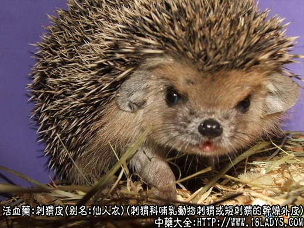
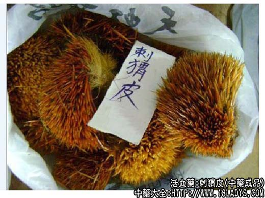
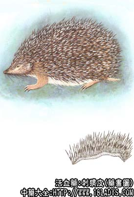

刺猬皮为少常用中药，始载《神农本草经》，列为中品。原名猬皮。
别名：仙人衣（天津）。
来源：为刺猬科哺乳动物刺猬或短刺猬的干燥外皮。均为野生。
产地：主产于河北、江苏、山东、河南、陕西、甘肃等地，其他各省亦有生产。
性状鉴别：刺猬皮呈扁囊状或不规则的片块状。大小不一，长宽约20厘米左右。外面密生硬刺，刺长1.5～3厘米，坚硬如针，白色、灰白色或灰褐色，边缘多生有灰褐色软毛。内面灰白色或污黄褐色，去净油肉的在刺的基部显小疙瘩。气腥臭。
以刺毛整洁，内面无油肉残留者为佳。
功效与作用：疏风散瘀，行血止痛，其作用为收敛。
炮制：剁成小块用滑石粉烫黄。
性味：苦、平。
归经：入胃、大肠经。
功能：活血，解毒，止痛。
主治：胃痛，子宫出血，便血，痔疮。
临床应用：为治疗痔漏的常用药，对痔疮出血，为配槐米炭、地榆炭，方如猬皮汤。
又治胃脘痛和反胃，取其有散瘀止痛作用。常配高良姜、延胡索、香附等制散服食。
用量：3～4.5g多煅成末入丸散剂，或和其他汤药冲服。
处方举例：猬皮汤：刺猬皮末（煅）3g（冲），槐米炭9g，地榆炭9g，浓煎服，每天2～3次。槐米炭和地榆炭可复煎。